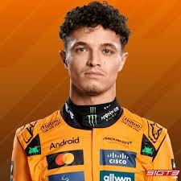
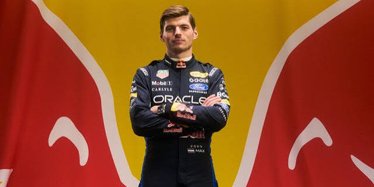
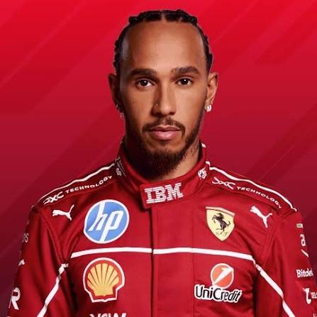
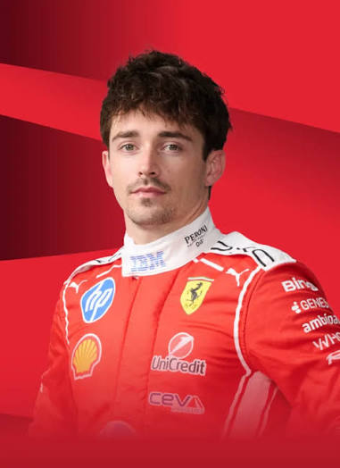
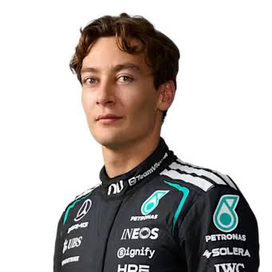
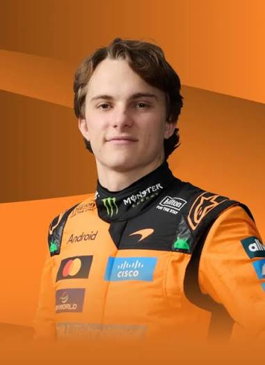
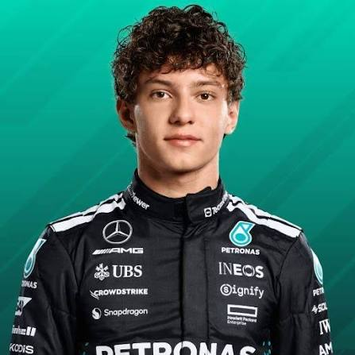
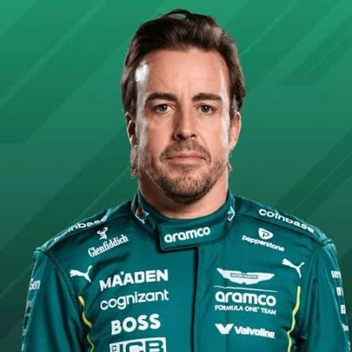
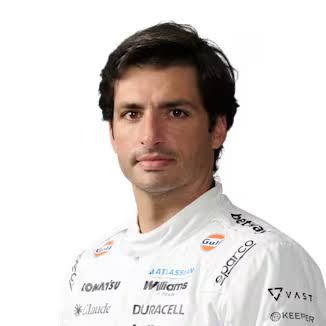
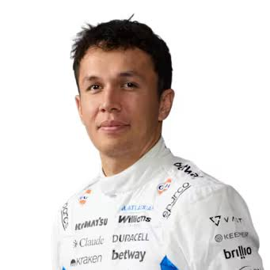

Equipo: McLaren

Logros:
• Campeón Mundial 2025.
• Múltiples victorias en Grandes Premios.
• Figura principal de McLaren.
Equipo: Red Bull Racing

Logros:
• 4 veces campeón del mundo.
• Más de 60 victorias.
• Récords de victorias en una temporada.
Equipo: Ferrari

Logros:
• 7 campeonatos mundiales.
• Más de 100 victorias.
• Récord histórico de poles.
Equipo: Ferrari

Logros:
• Varias victorias en F1.
• Uno de los pilotos más rápidos.
• Líder de Ferrari.
Equipo: Mercedes

Logros:
• Ganador de Grandes Premios.
• Líder de Mercedes.
• Múltiples podios.
Equipo: McLaren

Logros:
• Varias victorias en F1.
• Joven estrella australiana.
• Gran futuro en la categoría.
Equipo: Mercedes

Logros:
• Debutante sensación.
• Considerado una futura estrella.
• Destacado en categorías juveniles.
Equipo: Aston Martin

Logros:
• Bicampeón mundial.
• Más de 30 victorias.
• Uno de los pilotos más experimentados.
Equipo: Williams

Logros:
• Varias victorias en F1.
• Múltiples podios.
• Referente español actual.
Equipo: Williams

Logros:
• Múltiples podios.
• Líder de Williams.
• Destacado por su regularidad.